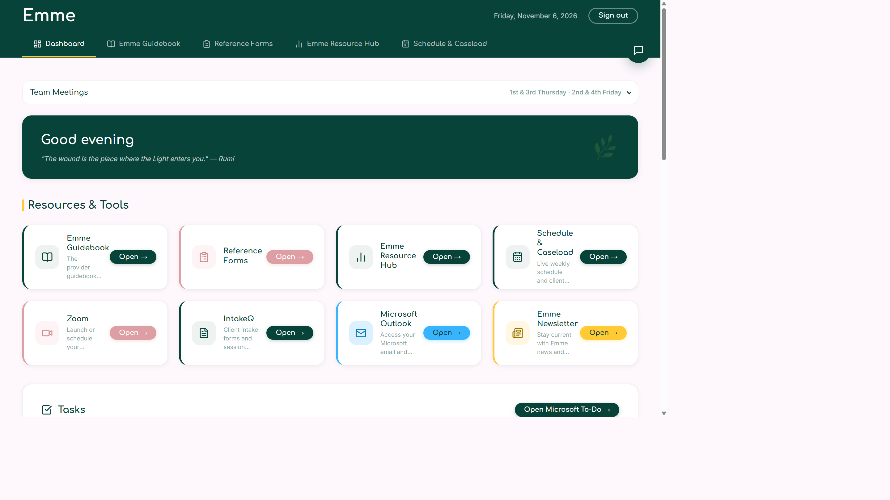
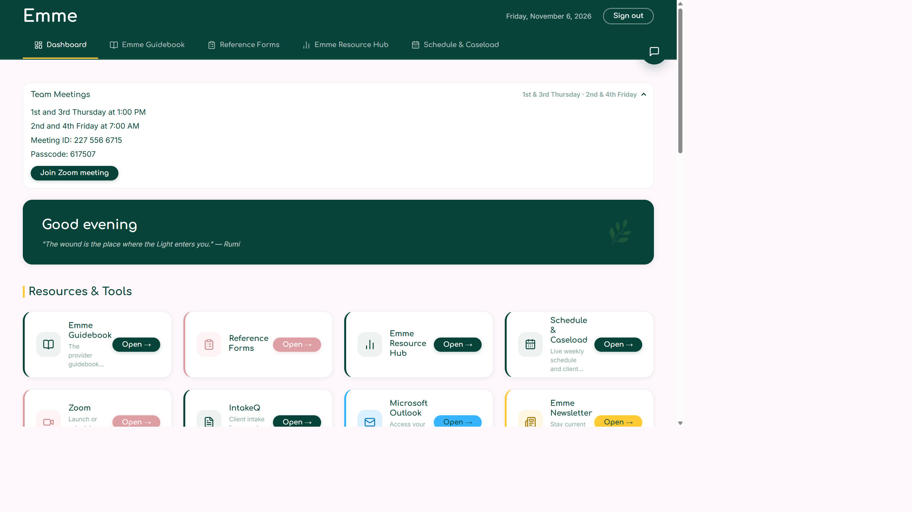
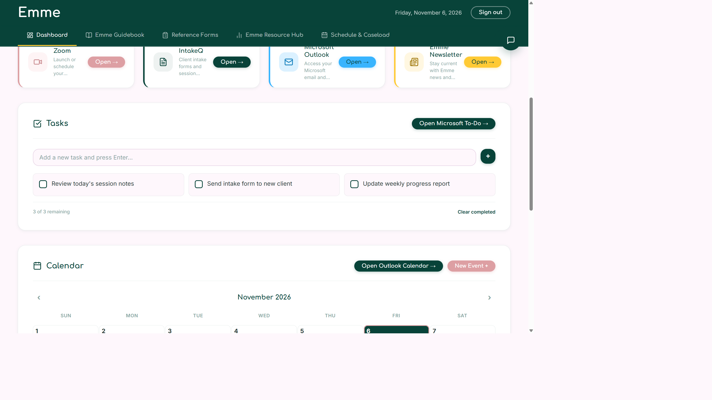
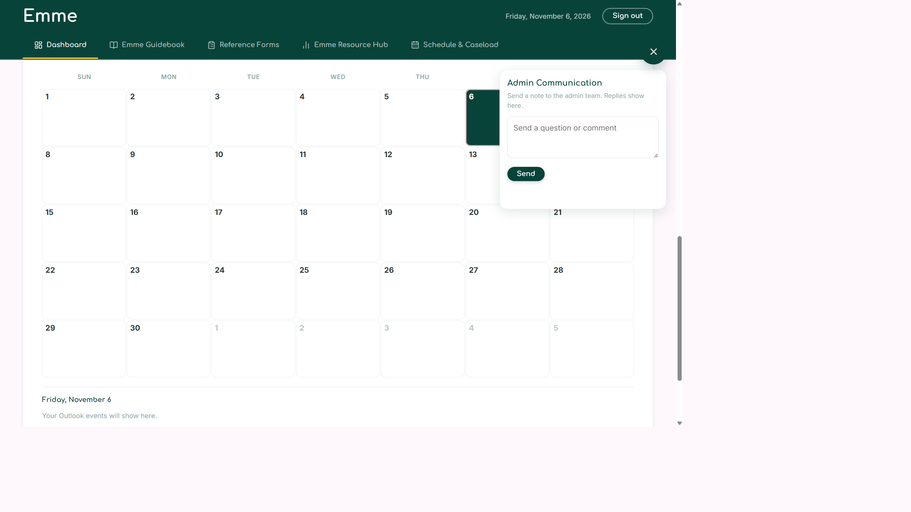
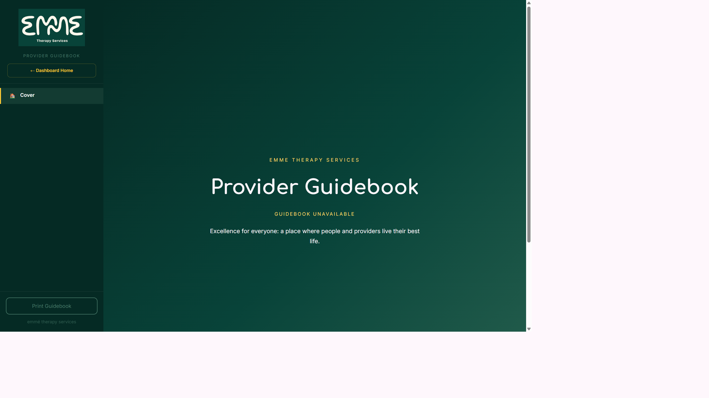
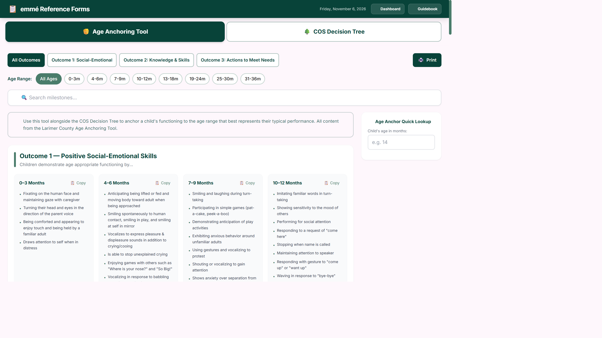
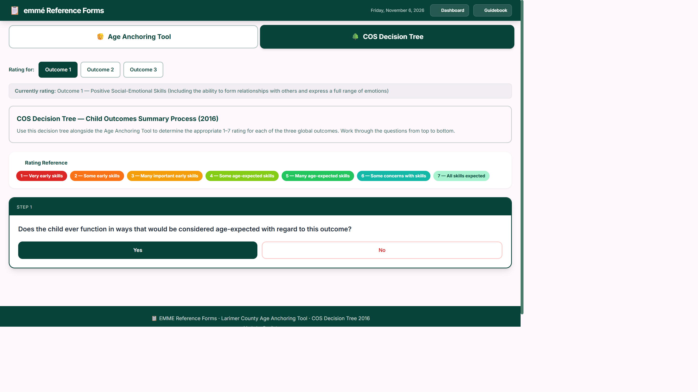
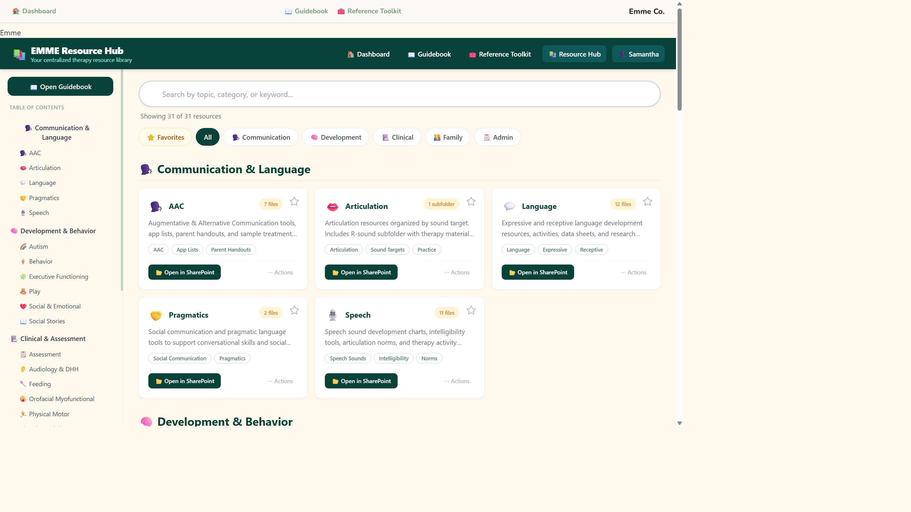
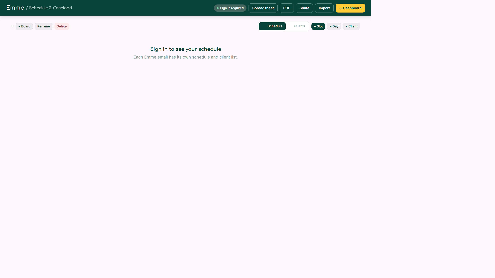

Watch the walkthrough
This plays the real screens in order. The guidebook and schedule pictures were taken before sign-in, so those two show the signed-out message. After you sign in, the same pages fill in with your guidebook sections and your own schedule.

1. Start on the home page
The green bar across the top is how you move around. Dashboard brings you back here. The other tabs open the guidebook, reference forms, resource hub, and schedule. Sign out is at the top right.
The greeting changes with the time of day. Under Resources & Tools, each card opens that tool. Zoom, IntakeQ, Outlook, and the newsletter open the outside sites.
2. Join a team meeting
Open Team Meetings. It lists the standing times: 1st and 3rd Thursday at 1:00 PM, and 2nd and 4th Friday at 7:00 AM. The meeting ID and passcode are in that panel. Join Zoom meeting opens the Zoom app.

3. Keep a task list
Type a task and press Enter, or use the plus button. Check a task when it is done, and use Clear completed to remove the finished ones.
Until Microsoft is connected, the list is saved in this browser and starts with three example tasks. After you connect Microsoft, the list reads your Microsoft To Do. Open Microsoft To‑Do leaves the dashboard and opens To Do itself.

4. See your Outlook calendar
The month view is on the home page. Today is highlighted. Select a day to see that day’s events underneath the grid. Events appear after Microsoft is connected. Until then, the day says your Outlook events will show here.
Open Outlook Calendar leaves the dashboard and opens Outlook. New Event opens Outlook’s new-event page.
5. Message the admin team
The round button at the top right opens Admin Communication. Write a question or comment and press Send. Replies from the admin team show in that same panel. A count appears on the button when a reply is waiting.

6. Read the guidebook
Open Emme Guidebook from a tab or a card. The cover is on the right, and the section list is on the left. After you are signed in, the sections come from the current SharePoint guidebook. Choose a section in the sidebar to jump to it. Print Guidebook is at the bottom of the sidebar. Dashboard Home returns you to the start.

7. Use the reference forms
Reference Forms has two tools. Age Anchoring Tool lists milestones by age. Filter with All Outcomes or one outcome, pick an age range, or search. Copy copies a milestone list. Print prints the page.

COS Decision Tree walks the Child Outcomes Summary questions. Pick Outcome 1, 2, or 3, then answer Yes or No from the top of the tree down. The rating key runs from 1, very early skills, to 7, all skills expected.

8. Find a resource
The Resource Hub is the therapy library. Search by topic, category, or keyword, or use the topic buttons on the left. Favorites, All, and the category chips narrow the cards. Open in SharePoint opens that folder. The star marks a favorite.

9. Build your schedule and caseload
Schedule & Caseload is your own board. Sign in with your Emme email first. Someone else’s schedule does not show on your page.
- Schedule shows the week. Clients shows the client cards. Search clients by name, email, phone, or agency.
- + Board, Rename, and Delete manage extra boards. One board is kept for clients who are not in a regular spot.
- + Day adds a day column. + Slot adds a time. Each slot has a status such as Full, Open 4x, Lunch, Makeup, or Not Open.
- + Client saves a card with name, date of birth, parents, Medicaid number, email, phone, agency, service coordinator, and whether the visit is virtual or in person. For in-person clients, average miles are used on the mileage form after Outlook and IntakeQ both show the visit.
- Email and phone on a card can be copied.
- Spreadsheet and PDF save a copy to your OneDrive. Share makes a link your bosses can open while they are signed in to Emme. Import reads clients from a spreadsheet, PDF, Word document, or text file.
